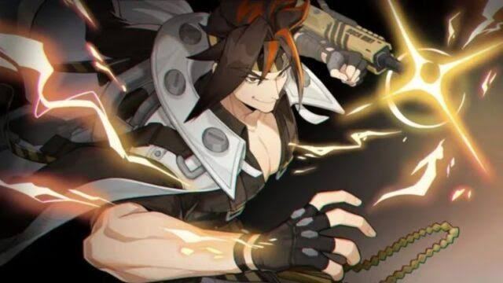

Anton Ivanov
| Nama | Anton Ivanov |
|---|---|
| Panggilan | Anton |
| Faksi | Belobog Heavy Industries |
| Ulang Tahun | 5 Februari |
| Kelamin | Laki |
| Spesies | Manusia |
Penjelasan
Anton adalah salah satu staf paling penting di Belobog Heavy Industries, dan juga salah satu orang yang paling dipercayai Koleda. "Pekerjaan susah? Amaannn, serahkan aja padaku!!" Dia adalah seorang pemuda yang antusias, namun saking antusiasnya, terkadang tubuhnya bergerak lebih cepat dari otaknya. Anton adalah salah satu karyawan senior yang direkrut oleh mantan presiden Belobog, yaitu Khors. Dia juga adalah pria tulus, jujur, dan juga selalu memotivasi rekan kerjanya dengan energi yang tak ada habis-habisnya. Selain itu, Anton tampaknya menganggap senjata Jackhammer miliknya sebagai teman, dan sering memanggilnya "Bro".
Kembali